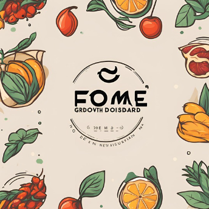
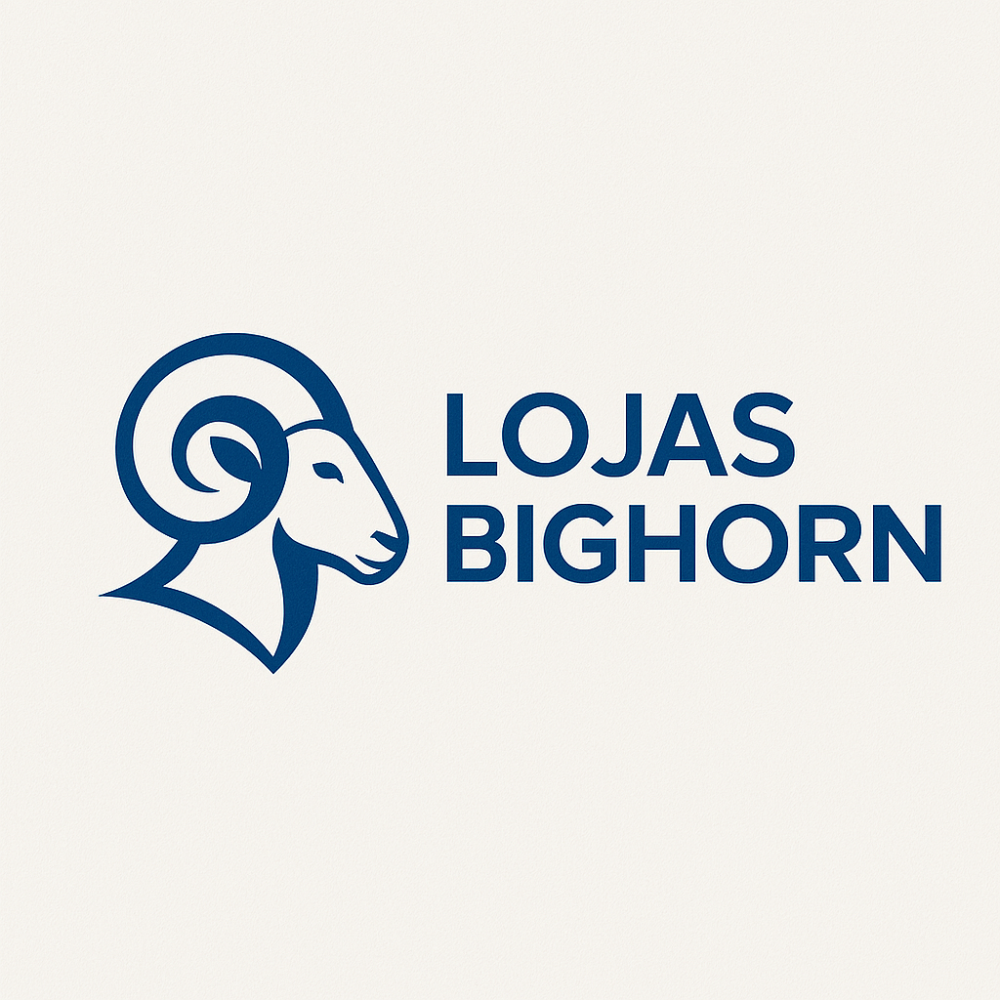

Olá, seja muito bem-vindo (a) ao meu portfólio de projetos de Ciência de Dados.
Você vai encontrar também minhas experiências profissionais, habilidades, ferramentas e conceitos envolvendo a Ciência de Dados.
Curry Company - Dashboard de KPIs Estratégicos
Problema de Negócio: Empresa de delivery precisava de visibilidade em tempo real dos KPIs operacionais para tomada de decisões estratégicas.
Solução: Dashboard interativo com métricas de entregadores, restaurantes e pedidos, permitindo análise por diferentes dimensões temporais e geográficas.

Predição de Preços de Combustíveis
Problema de Negócio: Necessidade de prever preços de combustíveis para auxiliar na tomada de decisões estratégicas no setor energético.
Solução: Modelo de Machine Learning utilizando Random Forest para predição de preços, com clustering K-Means para identificação de padrões regionais.

Fome Zero - Dashboard de Crescimento
Problema de Negócio: Marketplace de restaurantes precisava de insights sobre performance e oportunidades de crescimento em diferentes mercados.
Solução: Dashboard interativo com análises geoespaciais, métricas de performance por região e insights para estratégias de expansão.

Recomendação de Moda — Lojas Bighorn
Problema de Negócio: Personalizar a experiência de compra para aumentar conversão e ticket médio no varejo de moda.
Solução: Sistema híbrido combinando Filtragem Colaborativa (user-based) e Baseada em Conteúdo via TF-IDF, avaliado com Recall@K sobre o dataset H&M (Kaggle).
Segmentação de Clientes com RFM
Problema de Negócio: Identificar segmentos de clientes para direcionar campanhas de marketing e fidelização de forma personalizada.
Solução: Análise RFM com scoring por quintis e clustering K-Means, gerando 4 segmentos acionáveis com plano de marketing específico por grupo.
Previsão de Demanda no Varejo de Moda
Problema de Negócio: Antecipar a demanda de produtos para otimizar estoque, evitar rupturas e reduzir liquidações forçadas.
Solução: Modelo Prophet com sazonalidade de moda (coleções, Black Friday, Natal), intervalos de confiança e horizonte de 12 semanas, avaliado com MAPE.
Score de Crédito com Explicabilidade
Problema de Negócio: Avaliar automaticamente o risco de crédito com conformidade à Resolução CMN 4.557, que exige explicação das decisões.
Solução: XGBoost com SHAP para explicabilidade individual — cada recusa gera automaticamente um comunicado com os fatores determinantes da decisão.
Detecção de Fraude em Transações
Problema de Negócio: Detectar transações fraudulentas em dados extremamente desbalanceados (1 fraude para cada 500+ transações normais).
Solução: LightGBM + SMOTE com threshold otimizado para F1-Score, avaliado via AUC-PR — a métrica correta para dados desbalanceados.
Churn de Cooperados Sicredi
Problema de Negócio: Identificar cooperados em risco de cancelamento antes que saiam, priorizando ações de retenção de alto ROI.
Solução: XGBoost + SHAP com segmentação em 3 tiers de risco (baixo/médio/alto) e plano de retenção personalizado por segmento com estimativa de ROI.